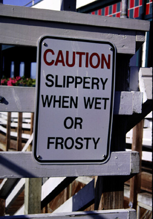

Watch Your Step. When you walk across to the other side of the wharf, you can take some stairs down to the dock. The sign pictured above gives warning that sometimes those stairs can be a little treacherous. The photograph was originally produced with late afternoon sun and a 35 mm camera using Provia slide film, shutter speed 250, F9.5. Photo copyright Andrea L. Arredondo, May 11, 2000.
Updated by Andrea Arredondo
5/19/00